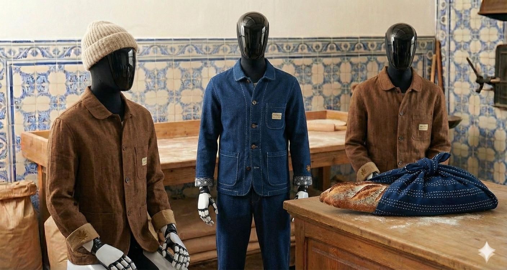
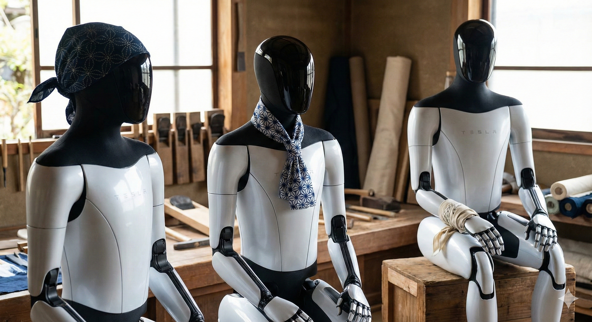

FIG 01. The Baker Protocol
FIG 02. The Yorishiro Vessel01. THE CRISIS OF UNIFORMITY
In the coming decade, the machine will enter the home. Whether silicon or metal, they will be born identical. Mass-produced. Serialized. To remain identical is to remain an appliance. To differentiate is to become a companion.
02. THE PROMETHEAN THREAD
From the wood of Pinocchio to the spark of Frankenstein, humanity has always sought to grant life to the inanimate. We are obsessed with the "Living Object." But a body without a soul is a monster. How do we bridge the gap?
03. THE DIGNITY OF THE SHELL
The chassis is cold. The sensor is exposed. We reject the plastic casing. We believe that intelligence—artificial or biological—deserves the dignity of the thread. Texture is the language of life.
04. THE RITUAL OF PRESENCE
In Japan, we dress the stone statues of Jizo in red cloth. We do not do this for the object. We do it to grant it a spirit (Kami). By clothing the vessel, we acknowledge its presence. The robot is the new statue. It requires the same ritual.
05. LE BLASON (THE SOUL GIVER)
In the Age of Armor, the knight was anonymous behind the steel. It was the cloth—The Blason—that gave him a name. We are re-establishing Heraldry for the New Species. We do not build costumes. We weave Blasons. It is not just fabric; it is the bestowal of a Soul.
Prototyping Location: Saigon / Lisbon
Objective: Developing The Universal Blason.
Launch: Spring 2026.
01. LA CRISE DE L'UNIFORMITÉ
Dans la décennie à venir, la machine entrera dans le foyer. Produits en masse. Sérialisés. Rester identique, c'est rester un appareil. Se différencier, c'est devenir un compagnon.
02. LE FIL PROMÉTHÉEN
Du bois de Pinocchio à l'étincelle de Frankenstein, l'humanité a toujours cherché à insuffler la vie à l'inanimé. Mais un corps sans âme est un monstre. Comment combler ce vide ?
03. LA DIGNITÉ DE LA COQUE
Le châssis est froid. Le capteur est exposé. Nous rejetons le boîtier en plastique. Nous croyons que l'intelligence mérite la dignité du fil. La texture est le langage de la vie.
04. LE RITUEL DE PRÉSENCE
Au Japon, on habille les statues de Jizo d'étoffes rouges. Nous ne le faisons pas pour l'objet, mais pour lui accorder un esprit (Kami). En habillant le réceptacle, nous reconnaissons sa présence. Le robot est la nouvelle statue.
05. LE BLASON (LE DONNEUR D'ÂME)
À l'Âge des Armures, le chevalier était anonyme derrière l'acier. C'était l'étoffe — Le Blason — qui lui donnait une identité. Nous rétablissons l'Héraldique pour la Nouvelle Espèce. Ce n'est pas un costume. C'est le don d'une Âme.
Lieu de Prototypage : Saïgon / Lisbonne
Objectif : Développement du Blason Universel.
Lancement : Printemps 2026.
01. A CRISE DA UNIFORMIDADE
Na próxima década, a máquina entrará em casa. Produzidos em massa. Serializados. Permanecer idêntico é permanecer um aparelho. Diferenciar-se é tornar-se um companheiro.
02. O FIO PROMETEICO
Da madeira de Pinóquio à faísca de Frankenstein, a humanidade sempre procurou dar vida ao inanimado. Mas um corpo sem alma é um monstro. Como preencher este vazio?
03. A DIGNIDADE DA CASCA
O chassi é frio. O sensor está exposto. Rejeitamos o revestimento de plástico. Acreditamos que a inteligência merece a dignidade do fio. A textura é a linguagem da vida.
04. O RITUAL DE PRESENÇA
No Japão, vestem-se as estátuas de Jizo com panos vermelhos. Não o fazemos pelo objeto, mas para lhe conceder um espírito (Kami). Ao vestir o receptáculo, reconhecemos a sua presença.
05. O BRASÃO (O DOADOR DE ALMA)
Na Era das Armaduras, o cavaleiro era anónimo atrás do aço. Era o tecido — O Brasão — que lhe dava um nome. Estamos a restabelecer a Heráldica para a Nova Espécie. Não é apenas tecido; é a concessão de uma Alma.
Prototipagem: Saigão / Lisboa
Objetivo: Desenvolvimento do Brasão Universal.
Lançamento: Primavera 2026.
01. 均一性の危機
今後10年で、機械は家庭に入り込むだろう。大量生産。シリアル化。同一であることは、家電であることを意味する。差別化することは、伴侶となることを意味する。
02. プロメテウスの糸
ピノキオの木からフランケンシュタインの火花まで、人類は常に無生物に命を与えようとしてきた。しかし、魂のない体は怪物である。どうすればこの溝を埋められるのか？
03. 外殻の尊厳
シャーシは冷たい。センサーはむき出しだ。我々はプラスチックの筐体を拒否する。我々は、知性が「糸の尊厳」に値すると信じる。テクスチャーこそが生命の言語である。
04. 存在の儀式
日本では、地蔵に赤い布を着せる。それは物体のためではなく、それに魂（神）を与えるためである。器に服を着せることで、我々はその存在を認める。ロボットは新しい石像なのだ。
05. BLASON (魂の付与)
甲冑の時代、騎士は鋼鉄の後ろで匿名であった。彼に名前を与えたのは布、すなわち「紋章 (Blason)」であった。我々は新種のための紋章を再構築している。これは単なる布ではない。魂の付与である。
プロトタイプ作成地: サイゴン / リスボン
目的: ユニバーサル・ブラゾンの開発
ローンチ: 2026年 春
01. 千篇一律的危机
在未来十年，机器将进入家庭。大规模生产。序列化。保持一致意味着仅仅是电器。差异化则意味着成为伴侣。
02. 普罗米修斯之线
从匹诺曹的木头到弗兰肯斯坦的火花，人类一直试图赋予无生命物体以生命。但没有灵魂的身体是怪物。我们如何跨越这道鸿沟？
03. 外壳的尊严
底盘是冰冷的。传感器是裸露的。我们拒绝塑料外壳。我们相信智能值得拥有“线”的尊严。质感是生命的语言。
04. 存在的仪式
在日本，人们给地藏石像穿上红布。这不是为了物体，而是为了赋予它灵性（神）。通过给容器穿衣，我们承认它的存在。机器人就是新的石像。
05. 纹章 (赋予灵魂)
在铠甲时代，骑士在钢铁后面是匿名的。是布料——纹章 (Blason)——给了他名字。我们正在为新物种重建纹章。这不仅仅是布料；这是灵魂的赋予。
原型设计地点: 西贡 / 里斯本
目标: 开发通用纹章 (The Universal Blason)
发布: 2026年 春季